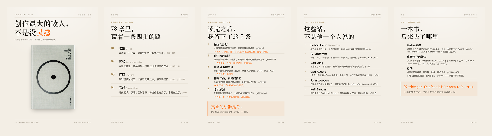
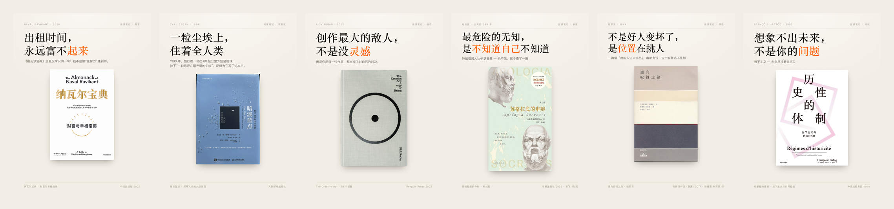

READING PKM · 01 / 背景
AI 时代如何阅读
AI 时代，如何阅读
阅读的第一性原理：经历他人的经历，借他人的视角理解世界。
读完之后，你有没有多出一副看世界的眼睛？
读书不是收藏信息，是让另一个人的经验，进入你的判断
Cozy reading time · StockCake
READING PKM · 02 / 哲学
PKM / PERSONAL KNOWLEDGE MASTERY
机器整理，人下判断
PKM 的 M 是 mastery：不是管理资料，是练出自己能调用的判断。
AI 可以替你 sense，也可以替你 share，但它不能替你——在意。
读过 ≠ 修养 · 能被调用 = 修养
READING PKM · 03 / 实现
PIPELINE / NINE SKILLS
一条流水线，九个 skill
每一步只做一件事，产物落到文件里；下一步读的，是上一步留下的文件。
另外四个 skill：管成品与互动
scandinavian-style版式与一页纸
human-writing口吻与去 AI 味
rednote-assistant排期与节奏
rednote-reply私信只读
九个 skill 打成一个 Codex plugin：装一次，全部就位。
READING PKM · 04 / 成果
EVIDENCE
跑起来，长这样
一本书进来，五张卡出去；一套模板，所有选题共用。


262
篇笔记
2405
粉丝
2.2 万
获赞与收藏
截至 2026-10-07 · 小红书 @司马读书
1–2 张卡 / 次
3–5K tokens / 次
0 向量库 · 0 数据库
读过的书，成为下一次判断时会被调用的视角。